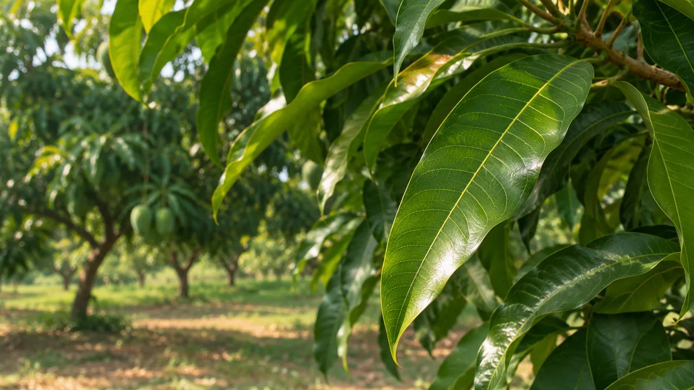

A closer look at mango leaves.
Scan mango leaves from a photo or webcam to spot possible signs of disease.

What to look for
- Anthracnose
- A fungal disease that leaves irregular dark spots on mango leaves.
- Powdery Mildew
- A fungus that looks like a white dusting, often on young leaves and shoots.
Pick the right scan
- Detection
- Find where a problem might be. Boxes mark possible Anthracnose, Powdery Mildew, or healthy areas.
- Classification
- Get a quick label for one leaf photo. It predicts Anthracnose or Healthy.
Detection
Upload a photo or scan live with your webcam.
Image source
Camera off
Preview
Choose a photo to see its preview.
Classification
Use one leaf per photo. Powdery Mildew is only checked in Detection.
Image source
Camera off
Preview
Choose a photo to see its preview.
AI predictions support observation. Confidence is a model score, and a photo alone cannot confirm a diagnosis or disease severity. UF/IFAS mango care guide
Detection history
Saved in this browser. Photos are kept only while this page is open.
Earlier browser history
Detection confidence statistics
Averages use saved detections. Model confidence is a score, not a measure of correctness.